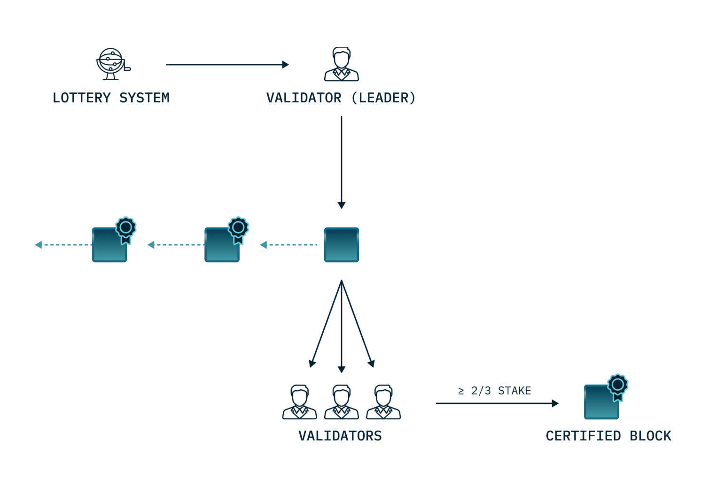

Block production and validation#
Validation is key to the Concordium blockchain. A node is a validator node when it participates actively in the network by creating new blocks that are added to the chain. The blockchain consists of multiple validator nodes. A validator collects, orders, and validates the transactions that are included in a block to maintain the integrity of the blockchain. The validators sign each block that they produce so that the block can be verified and executed by the other validators in the network.
How validation works#
Concordium uses a consensus protocol, ConcordiumBFT , that proceeds in rounds. Each round requires a leader to produce a new block and extend the chain. These rounds are grouped into epochs, with each epoch corresponding to one hour real time. For every epoch, a proof-of-stake based lottery system produces a list determining which validator will be the leader for each round during that period. The higher a validator’s stake, the higher the probability of being included on the list more often. The validator list remains fixed for the epoch. See details about time concepts on Concordium.
The validation process within an epoch then follows these steps:
The first leader on the list makes a new block that extends the chain.
The leader then broadcasts the block to all validators on the network.
If the block is valid, i.e., it is well-formed and correctly placed in the chain, the validators will sign it.
If the combined effective stake of the validators who sign the block is greater than or equal to two-thirds of the total stake, the block gets a Quorum Certificate (QC) that certifies that this is a valid block. Without the QC the new round cannot progress.
The next leader on the list now uses the QC to produce the next block. The new block can only extend the previous block when a QC is presented to the leader.
The process continues throughout the epoch, with each subsequent leader on the list following the same steps to create and validate the next block in the chain.
Below you see a diagram of a validation round:

In the case of a faulty leader who does not produce a block or produces an invalid block, a timeout mechanism handles the process. If the leader does not produce a block within a certain time, a Timeout Certificate (TC) is issued to move the process forward. The next leader can now use the TC to skip the previous round and extend an older block for which they have a QC.
A block becomes final when both the block and its child have Quorum Certificates in consecutive rounds of the same epoch, ensuring it cannot be rolled back and is part of the authoritative chain.
Stake and lottery#
A validator needs to stake a minimum of 500,000 CCD on their validator account, which becomes locked while they are active. Validators can manually release part of the staked amount later, as long as the minimum requirement is maintained, or they can close the validator entirely.
All validators automatically participate in a lottery every round to determine who will produce the next block. The greater the validator’s stake, the greater their chance of winning the lottery and being selected to produce a block.
Staking pools#
Validators have the option to open a staking pool. A staking pool allows others who want to earn rewards to do so without the need to run a node or become a validator themselves. Delegators add their stake to the validator’s pool, which increases the validator’s total stake and chances of winning the lottery to produce blocks.
Validators can choose not to open a pool, in which case only their own stake applies toward the lottery. They can always open a pool later if they decide to accept delegations.
Validator rewards#
Validators earn rewards through multiple sources when they successfully participate in the network. These rewards are paid to the validator’s account at pay day and come from both newly minted CCD and transaction fees collected from processed transactions.
Validators who operate staking pools can also earn commission from their delegators, providing an additional revenue stream based on the pool’s performance.
Requirements and responsibilities#
Becoming a validator requires both financial commitment and technical capability. Beyond the minimum 500,000 CCD stake, validators must run node software continuously and maintain reliable infrastructure.
Validators are responsible for the ongoing operation and maintenance of their nodes, including monitoring performance and applying necessary updates. The validator’s performance directly impacts both their own rewards and, if operating a pool, the rewards of their delegators.
As a validator you must set up a validator account and generate a validator key pair. The account holds your stake and receives rewards, and the keys are used to cryptographically sign the blocks you produce and prove your identity as a validator.
Further reading#
For more information on validation:
Staking: Introduction to validation and delegation on Concordium
How to become a validator : Guide to becoming a validator